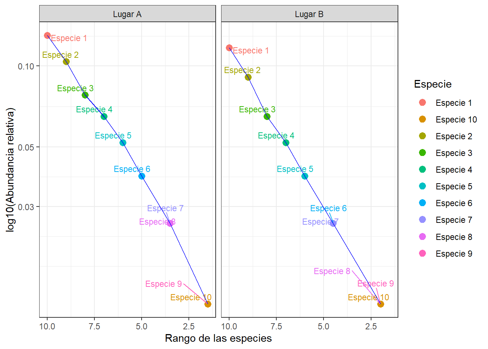
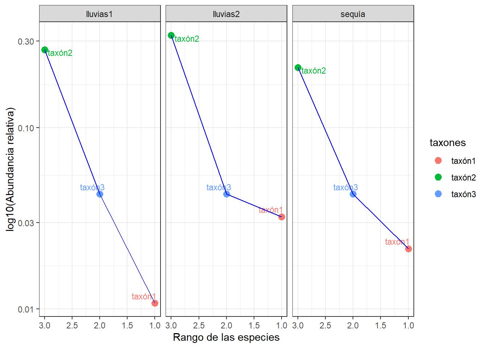
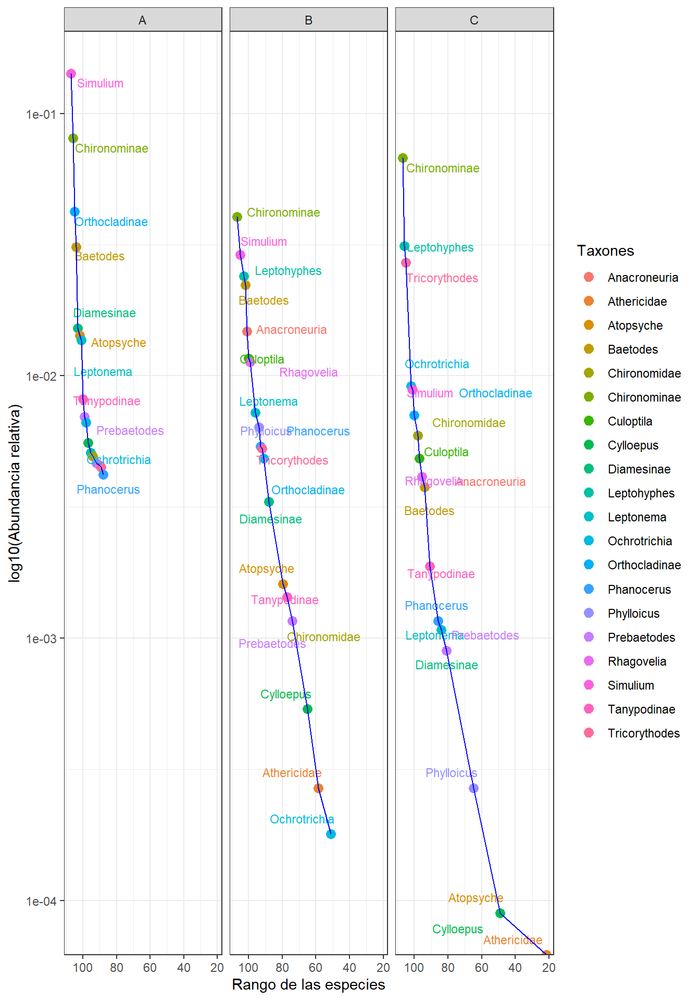
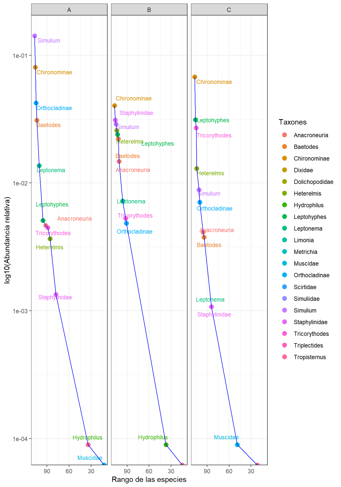

# Librerías requeridas
library(tidyverse)
library(ggplot2)
library(ggrepel)
library(dplyr)Taller 7. Visualización de Comunidades - Curvas Whitaker
Diversidad Alfa de un ensamble de macroinvertebrados acuuáticos
El presente taller, tiene por objeto, realizar Curvas de rango-abundancia o de Whittaker, las cuales permiten evaluar el patrón de diversidad de las muestras de comunidades, ensambles o ensamblajes, a partir de lka relación entre las abundancias (en escala logarítmica) (eje y) y del orden de las especies de mayor a menor abundancia, por rangos (eje x). Se iniciará con dos ejemplos de datos hipotéticos y posteriormente se realizará el ejercicio con la base de datos de macroinvertebrados acuáticos de tres tramos en el río Gaira (datos.csv).
Ejemplo 1. con datos hipotéticos
# Crear un dataframe de ejemplo con los datos de abundancia de especies para cada lugar
datos <- data.frame(
Lugar = c(rep("Lugar A", 10), rep("Lugar B", 10)), # Nombres de los lugares
Especie = c(paste("Especie", 1:10), paste("Especie", 1:10)), # Nombres de las especies
Abundancia = c(10, 8, 6, 5, 4, 3, 2, 2, 1, 1, 9, 7, 5, 4, 3, 2, 2, 1, 1, 1) # Abundancia de las especies
)
head(datos) Lugar Especie Abundancia
1 Lugar A Especie 1 10
2 Lugar A Especie 2 8
3 Lugar A Especie 3 6
4 Lugar A Especie 4 5
5 Lugar A Especie 5 4
6 Lugar A Especie 6 3# Eje x: Rango de las especies para cada lugar
# se inserta una columna "rango" que ranquea a las abundancias de c/spp
datos$rango <- ave(datos$Abundancia, datos$Lugar, FUN = rank, ties.method = "min")
# Eje y: Abundancia relativa de las especies para cada lugar (log10)
# se inserta una columna "abundancia_rel"
datos$abundancia_rel <- (datos$Abundancia / sum(datos$Abundancia))
# Filtrado de los datos de manera descendente por cada rango de abundancia
datos <- datos[order(datos$rango, decreasing = TRUE), ]# Curva de rango-abundancia
curva <- ggplot(datos, aes(x = rango, y = abundancia_rel, color = Especie, label = Especie)) +
geom_point(size = 3) +
geom_text_repel(aes(label = Especie), hjust = 1, vjust = 1.5, size = 3) + geom_line(color = "blue") +
scale_x_reverse() +
scale_y_log10() +
labs(x = "Rango de las especies", y = "log10(Abundancia relativa)", color = "Especie") +
facet_wrap(~Lugar, nrow = 1) +
theme_bw()
# Mostrar la curva de rango-abundancia en el panel gráfico
print(curva)
Ejemplo 2. con datos hipoteticos de tres especies
datos <- data.frame(meses = c("enero", "junio", "octubre"),
periodos = c("sequía", "lluvias1", "lluvias2"),
taxón1 = c(2, 1, 3),
taxón2 = c(20, 25, 30),
taxón3 = c(4, 4, 4))
head(datos) meses periodos taxón1 taxón2 taxón3
1 enero sequía 2 20 4
2 junio lluvias1 1 25 4
3 octubre lluvias2 3 30 4# Convertir los datos a formato largo (long format)
datos_largo <- datos %>%
pivot_longer(cols = starts_with("taxón"), names_to = "taxones", values_to = "Abundancia")# Ordenar los datos por periodo y taxón
datos1 <- datos_largo %>%
arrange(periodos, taxones)
head(datos1)# A tibble: 6 × 4
meses periodos taxones Abundancia
<chr> <chr> <chr> <dbl>
1 junio lluvias1 taxón1 1
2 junio lluvias1 taxón2 25
3 junio lluvias1 taxón3 4
4 octubre lluvias2 taxón1 3
5 octubre lluvias2 taxón2 30
6 octubre lluvias2 taxón3 4# Eje x: Rango de las especies para cada periodo
# se inserta una columna "rango" que ranquea a las abundancias de c/spp
datos1$rango <- ave(datos1$Abundancia, datos1$periodos, FUN = rank, ties.method = "min")# Eje y: Abundancia relativa de las especies para cada periodo
# se inserta una columna "abundancia_rel"
datos1$abundancia_rel <- datos1$Abundancia / sum(datos1$Abundancia)# Filtrado de los datos de manera descendente por cada rango de abundancia
datos1 <- datos1[order(datos1$rango, decreasing = TRUE), ]
datos1# A tibble: 9 × 6
meses periodos taxones Abundancia rango abundancia_rel
<chr> <chr> <chr> <dbl> <dbl> <dbl>
1 junio lluvias1 taxón2 25 3 0.269
2 octubre lluvias2 taxón2 30 3 0.323
3 enero sequía taxón2 20 3 0.215
4 junio lluvias1 taxón3 4 2 0.0430
5 octubre lluvias2 taxón3 4 2 0.0430
6 enero sequía taxón3 4 2 0.0430
7 junio lluvias1 taxón1 1 1 0.0108
8 octubre lluvias2 taxón1 3 1 0.0323
9 enero sequía taxón1 2 1 0.0215# Curva de rango-abundancia
curva <- ggplot(datos1, aes(x = rango, y = abundancia_rel, color = taxones, label = taxones)) +
geom_point(size = 3) +
geom_text_repel(aes(label = taxones), hjust = 1, vjust = 1.5, size = 3) + geom_line(color = "blue") +
scale_x_reverse() +
scale_y_log10() +
labs(x = "Rango de las especies", y = "log10(Abundancia relativa)", color = "taxones") +
facet_wrap(~periodos, nrow = 1) +
theme_bw()
# Mostrar la curva de rango-abundancia en el panel gráfico
print(curva)
Ejemplo 3. con datos de macroinvertebrados
# Reiniciar el entorno gráfico
# dev.off()
# Cargar la base de datos y asignarla como "datos"
datos <- read.csv2("datos.csv")
# print.Date(datos) # Muestra a toda la base de datos
head(datos) # head permite mostrar solo 6 filas de la base de datos (datos). TAXA A B C
1 Simulium 1586 323 99
2 Chironominae 901 451 756
3 Orthocladinae 473 54 79
4 Baetodes 346 248 42
5 Diamesinae 170 37 10
6 Atopsyche 159 18 1# Convertir los datos a formato largo (long format)
# Convertir los datos a formato largo
datos_largo <- datos %>%
pivot_longer(cols = -TAXA, names_to = "Tramos", values_to = "Abundancia")
head(datos_largo)# A tibble: 6 × 3
TAXA Tramos Abundancia
<chr> <chr> <int>
1 "Simulium" A 1586
2 "Simulium" B 323
3 "Simulium" C 99
4 "Chironominae " A 901
5 "Chironominae " B 451
6 "Chironominae " C 756# Ordenar los datos por periodo y taxón en nueva base de datos (datos1)
datos1 <- datos_largo %>%
arrange(TAXA, Tramos)
attach(datos1)
colnames(datos1) <- c("Taxones", "Tramos", "Abundancia")
head(datos1)# A tibble: 6 × 3
Taxones Tramos Abundancia
<chr> <chr> <int>
1 Alluaudomyia A 40
2 Alluaudomyia B 17
3 Alluaudomyia C 8
4 Anacroneuria A 52
5 Anacroneuria B 165
6 Anacroneuria C 46# Eje x: Rango de las especies para cada periodo
# se inserta una columna "rango" que ranquea a las abundancias de c/spp
datos1$rango <- ave(datos1$Abundancia, datos1$Tramos, FUN = rank, ties.method = "min")# Eje y: Abundancia relativa de las especies para cada periodo (log10)
# se inserta una columna "abundancia_rel"
datos1$abundancia_rel <- datos1$Abundancia / sum(datos1$Abundancia)# Filtrado de los datos de manera descendente por cada rango de abundancia
datos1 <- datos1[order(datos1$rango, decreasing = TRUE), ]
datos1# A tibble: 321 × 5
Taxones Tramos Abundancia rango abundancia_rel
<chr> <chr> <int> <dbl> <dbl>
1 "Chironominae " B 451 107 0.0404
2 "Chironominae " C 756 107 0.0677
3 "Simulium" A 1586 107 0.142
4 "Chironominae " A 901 106 0.0807
5 "Leptohyphes" C 349 106 0.0313
6 "Staphylinidae" B 347 106 0.0311
7 "Orthocladinae" A 473 105 0.0424
8 "Simulium" B 323 105 0.0289
9 "Tricorythodes" C 302 105 0.0270
10 "Baetodes" A 346 104 0.0310
# ℹ 311 more rows# Curva de rango-abundancia
curva <- ggplot(datos1, aes(x = rango, y = abundancia_rel, color = Taxones)) +
geom_point(size = 3) +
geom_text_repel(aes(label = Taxones), hjust = 1, vjust = 1.5, size = 3,
box.padding = 0.5, point.padding = 0.2, segment.color = NA) +
geom_line(color = "blue") +
scale_x_reverse() +
scale_y_log10() +
labs(x = "Rango de las especies", y = "log10(Abundancia relativa)", color = "Taxones") +
facet_wrap(~Tramos, nrow = 1) +
theme_bw()
# Guardar la figura, por ser muy grande
ggsave("curva_rango_abundancia.png", curva, width = 10, height = 6)Warning: Transformation introduced infinite values in continuous y-axis
Transformation introduced infinite values in continuous y-axis
Transformation introduced infinite values in continuous y-axisWarning: ggrepel: 98 unlabeled data points (too many overlaps). Consider
increasing max.overlapsWarning: ggrepel: 94 unlabeled data points (too many overlaps). Consider
increasing max.overlapsWarning: ggrepel: 92 unlabeled data points (too many overlaps). Consider
increasing max.overlaps# Mostrar la curva de rango-abundancia en el panel gráfico
# Puede tener problemas de imprimir esta figura debido al gran número de taxones
# print(curva)Ejemplo 3.1 Filtrado con los taxones más importantes (20 taxones uniques)
# Filtrar los principales taxones (por ejemplo, los 10 primeros)
principales_taxones <- head(unique(datos$TAXA), 20)
datos_filtrados <- datos1 %>% filter(Taxones %in% principales_taxones)curva <- ggplot(datos_filtrados, aes(x = rango, y = abundancia_rel, color = Taxones, label = Taxones)) +
geom_point(size = 3) +
geom_text_repel(aes(label = Taxones), hjust = 1, vjust = 1.5, size = 3,
box.padding = 0.5, point.padding = 0.2, segment.color = NA) +
geom_line(color = "blue") +
scale_x_reverse() +
scale_y_log10() +
labs(x = "Rango de las especies", y = "log10(Abundancia relativa)", color = "Taxones") +
facet_wrap(~Tramos, nrow = 1) +
theme_bw()
# Mostrar la curva de rango-abundancia en el panel gráfico
print(curva)
Ejemplo 3.2 Filtrado con los taxones más importantes (10 más abundantes y 10 menos abundantes)
datos <- read.csv2("datos.csv")
datos_largo <- datos %>%
pivot_longer(cols = -TAXA, names_to = "Tramos", values_to = "Abundancia")
datos1 <- datos_largo %>%
arrange(TAXA, Tramos)
colnames(datos1) <- c("Taxones", "Tramos", "Abundancia")
datos1$rango <- ave(datos1$Abundancia, datos1$Tramos, FUN = rank, ties.method = "min")
datos1$Abundancia_rel <- datos1$Abundancia / sum(datos1$Abundancia)# Filtrar los principales taxones (10 taxones más abundantes)
top_taxones <- datos1 %>%
group_by(Taxones) %>%
summarise(total_abundancia = sum(Abundancia_rel)) %>%
arrange(desc(total_abundancia)) %>%
slice(1:10) %>%
pull(Taxones)
# 10 taxones más abundantes
bottom_taxones <- datos1 %>%
group_by(Taxones) %>%
summarise(total_abundancia = sum(Abundancia_rel)) %>%
arrange(total_abundancia) %>%
slice(1:10) %>%
pull(Taxones)
# Dataframe
datos_filtrados <- datos1 %>%
filter(Taxones %in% c(top_taxones, bottom_taxones))curva <- ggplot(datos_filtrados, aes(x = rango, y = Abundancia_rel, color = Taxones, label = Taxones)) +
geom_point(size = 3) +
geom_text_repel(aes(label = Taxones), hjust = 1, vjust = 1.5, size = 3,
box.padding = 0.5, point.padding = 0.2, segment.color = NA) +
geom_line(color = "blue") +
scale_x_reverse() +
scale_y_log10() +
labs(x = "Rango de las especies", y = "log10(Abundancia relativa)", color = "Taxones") +
facet_wrap(~Tramos, nrow = 1) +
theme_bw()
# Mostrar la curva de rango-abundancia en el panel gráfico
print(curva)
Nota Pendiente ejecutar los comandos con una mustra aleatoria de 20 taxones del total.